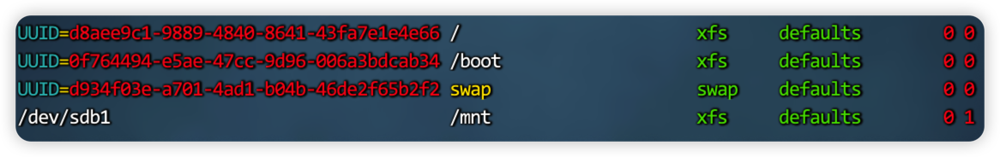

<!DOCTYPE html>
<html lang="en">

<!-- Head tag -->
<head>
    <meta charset="utf-8">
    <meta http-equiv="X-UA-Compatible" content="IE=edge">
    <meta name="google-site-verification" content="xBT4GhYoi5qRD5tr338pgPM5OWHHIDR6mNg1a3euekI" />
    <meta name="baidu-site-verification" content="093lY4ziMu" />
    <meta name="viewport" content="width=device-width, initial-scale=1, user-scalable=no">
    <meta name="description" content="张张的博客">
    <meta name="keyword"  content="爱技术、爱美食、爱生活">
    <link rel="shortcut icon" href="/img/ironman-draw.png">
    <!-- Place this tag in your head or just before your close body tag. -->
    <script async defer src="https://buttons.github.io/buttons.js"></script>
    <!--<link href='http://fonts.googleapis.com/css?family=Montserrat:400,700' rel='stylesheet' type='text/css'>-->
    <title>
        
          磁盘使用流程及企业分区方案 - Dante&#39;s blog
        
    </title>

    <link rel="canonical" href="https://dusign.net/2022/12/14/LINUX运维-2022-12-14-磁盘使用的全流程/">

    <!-- Bootstrap Core CSS -->
    
<link rel="stylesheet" href="/css/bootstrap.min.css">


    <!-- Custom CSS --> 
    
        
<link rel="stylesheet" href="/css/dusign-light.css">

        
<link rel="stylesheet" href="/css/dusign-common-light.css">

        
<link rel="stylesheet" href="/css/font-awesome.css">

        
<link rel="stylesheet" href="/css/toc.css">

        <!-- background effects end -->
    
    
    <!-- Pygments Highlight CSS -->
    
<link rel="stylesheet" href="/css/highlight.css">


    
<link rel="stylesheet" href="/css/widget.css">


    
<link rel="stylesheet" href="/css/rocket.css">


    
<link rel="stylesheet" href="/css/signature.css">


    
<link rel="stylesheet" href="/css/fonts.googleapis.css">


    <link rel="stylesheet" href="//cdn.bootcss.com/font-awesome/4.3.0/css/font-awesome.min.css">

    <!-- photography -->
    
<link rel="stylesheet" href="/css/photography.css">


    <!-- ga & ba script hoook -->
    <script></script>
<meta name="generator" content="Hexo 4.2.1"></head>


<!-- hack iOS CSS :active style -->
<body ontouchstart="">

    <!-- background effects start -->
    
    <!-- background effects end -->

	<!-- Modified by Yu-Hsuan Yen -->
<!-- Post Header -->
<style type="text/css">
    header.intro-header{
        
            
                background-image: linear-gradient(rgba(0, 0, 0, 0.3), rgba(0, 0, 0, 0.3)), url('../../../../img/default.jpg')
                /*post*/
            
        
    }
    
    #signature{
        background-image: url('/img/signature/dante.png');
    }
    
</style>

<header class="intro-header" >
    <!-- Signature -->
    <div id="signature">
        <div class="container">
            <div class="row">
                <div class="col-lg-8 col-lg-offset-2 col-md-10 col-md-offset-1">
                
                    <div class="post-heading">
                        <div class="tags">
                            
                              <a class="tag" href="/tags/#LINUX" title="LINUX">LINUX</a>
                            
                        </div>
                        <h1>磁盘使用流程及企业分区方案</h1>
                        <h2 class="subheading"></h2>
                        <span class="meta">
                            Posted by Dante on
                            2022-12-14
                        </span>

                        
                            <div class="blank_box"></div>
                            <span class="meta">
                                Words <span class="post-count">1.5k</span> and
                                Reading Time <span class="post-count">6</span> Minutes
                            </span>
                            <div class="blank_box"></div>
                            <!-- 不蒜子统计 start -->
                            <span class="meta">
                                Viewed <span id="busuanzi_value_page_pv"><i class="fa fa-spinner fa-spin"></i></span> Times
                            </span>
                            <!-- 不蒜子统计 end -->
                        

                    </div>
                

                </div>
            </div>
        </div>      
    </div>

    
    <div class="waveWrapper">
        <div class="wave wave_before" style="background-image: url('/img/wave-light.png')"></div>
        <div class="wave wave_after" style="background-image: url('/img/wave-light.png')"></div>
    </div>
    
</header>

	
    <!-- Navigation -->
<nav class="navbar navbar-default navbar-custom navbar-fixed-top">
    <div class="container-fluid">
        <!-- Brand and toggle get grouped for better mobile display -->
        <div class="navbar-header page-scroll">
            <button type="button" class="navbar-toggle">
                <span class="sr-only">Toggle navigation</span>
                <span class="icon-bar"></span>
                <span class="icon-bar"></span>
                <span class="icon-bar"></span>
            </button>
            <a class="navbar-brand" href="/">Dante&#39;s Blog</a>
        </div>

        <!-- Collect the nav links, forms, and other content for toggling -->
        <!-- Known Issue, found by Hux:
            <nav>'s height woule be hold on by its content.
            so, when navbar scale out, the <nav> will cover tags.
            also mask any touch event of tags, unfortunately.
        -->
        <div id="huxblog_navbar">
            <div class="navbar-collapse">
                <ul class="nav navbar-nav navbar-right">
                    <li>
                        <a href="/">Home</a>
                    </li>

                    

                        
                    

                        
                        <li>
                            <a href="/about/">About</a>
                        </li>
                        
                    

                        
                        <li>
                            <a href="/archive/">Archives</a>
                        </li>
                        
                    

                        
                        <li>
                            <a href="/photography/">Photography</a>
                        </li>
                        
                    

                        
                        <li>
                            <a href="/categories/">Categories</a>
                        </li>
                        
                    

                        
                        <li>
                            <a href="/tags/">Tags</a>
                        </li>
                        
                    
                    
                    
                </ul>
            </div>
        </div>
        <!-- /.navbar-collapse -->
    </div>
    <!-- /.container -->
</nav>
<script>
    // Drop Bootstarp low-performance Navbar
    // Use customize navbar with high-quality material design animation
    // in high-perf jank-free CSS3 implementation
    var $body   = document.body;
    var $toggle = document.querySelector('.navbar-toggle');
    var $navbar = document.querySelector('#huxblog_navbar');
    var $collapse = document.querySelector('.navbar-collapse');

    $toggle.addEventListener('click', handleMagic)
    function handleMagic(e){
        if ($navbar.className.indexOf('in') > 0) {
        // CLOSE
            $navbar.className = " ";
            // wait until animation end.
            setTimeout(function(){
                // prevent frequently toggle
                if($navbar.className.indexOf('in') < 0) {
                    $collapse.style.height = "0px"
                }
            },400)
        }else{
        // OPEN
            $collapse.style.height = "auto"
            $navbar.className += " in";
        }
    }
</script>


    <!-- Main Content -->
    <!-- Post Content -->
<article>
    <div class="container">
        <div class="row">

            <!-- Post Container -->
            <div class="
                col-lg-8 col-lg-offset-2
                col-md-10 col-md-offset-1
                post-container">

                <h2 id="磁盘使用流程概述"><a href="#磁盘使用流程概述" class="headerlink" title="磁盘使用流程概述"></a>磁盘使用流程概述</h2><p>其实磁盘的使用，主要就是三个步骤，分区、格式化、挂载</p>
<ol>
<li><p>磁盘分区 :有了一块地,划分隔断. fdisk/parted</p>
</li>
<li><p>格式化（创建文件系统） :对房间进行装修. mkfs</p>
</li>
<li><p>挂载 :安装门窗,可以入住与使用. mount Linux下面设备必须要挂载才能访问与使用,没有挂载相当于房子没 有门窗. 挂载相当于给设备设置了一个入口.</p>
</li>
</ol>
<h2 id="实战演示"><a href="#实战演示" class="headerlink" title="实战演示"></a>实战演示</h2><h3 id="磁盘分区-对新添加的sdb磁盘划分一个分区"><a href="#磁盘分区-对新添加的sdb磁盘划分一个分区" class="headerlink" title="磁盘分区 对新添加的sdb磁盘划分一个分区"></a>磁盘分区 对新添加的sdb磁盘划分一个分区</h3><figure class="highlight shell"><table><tr><td class="gutter"><pre><span class="line">1</span><br><span class="line">2</span><br><span class="line">3</span><br><span class="line">4</span><br><span class="line">5</span><br><span class="line">6</span><br><span class="line">7</span><br><span class="line">8</span><br><span class="line">9</span><br><span class="line">10</span><br><span class="line">11</span><br><span class="line">12</span><br><span class="line">13</span><br><span class="line">14</span><br><span class="line">15</span><br><span class="line">16</span><br><span class="line">17</span><br><span class="line">18</span><br><span class="line">19</span><br><span class="line">20</span><br><span class="line">21</span><br><span class="line">22</span><br><span class="line">23</span><br><span class="line">24</span><br><span class="line">25</span><br><span class="line">26</span><br><span class="line">27</span><br><span class="line">28</span><br><span class="line">29</span><br><span class="line">30</span><br><span class="line">31</span><br><span class="line">32</span><br><span class="line">33</span><br><span class="line">34</span><br><span class="line">35</span><br><span class="line">36</span><br><span class="line">37</span><br><span class="line">38</span><br><span class="line">39</span><br><span class="line">40</span><br><span class="line">41</span><br><span class="line">42</span><br><span class="line">43</span><br><span class="line">44</span><br><span class="line">45</span><br><span class="line">46</span><br><span class="line">47</span><br><span class="line">48</span><br><span class="line">49</span><br><span class="line">50</span><br><span class="line">51</span><br><span class="line">52</span><br><span class="line">53</span><br><span class="line">54</span><br><span class="line">55</span><br><span class="line">56</span><br><span class="line">57</span><br><span class="line">58</span><br><span class="line">59</span><br><span class="line">60</span><br><span class="line">61</span><br><span class="line">62</span><br><span class="line">63</span><br><span class="line">64</span><br><span class="line">65</span><br><span class="line">66</span><br><span class="line">67</span><br><span class="line">68</span><br><span class="line">69</span><br><span class="line">70</span><br></pre></td><td class="code"><pre><span class="line"></span><br><span class="line">[root@linx01 ~]# fdisk -l</span><br><span class="line"></span><br><span class="line">磁盘 /dev/sda：21.5 GB, 21474836480 字节，41943040 个扇区</span><br><span class="line">Units = 扇区 of 1 * 512 = 512 bytes</span><br><span class="line">扇区大小(逻辑/物理)：512 字节 / 512 字节</span><br><span class="line">I/O 大小(最小/最佳)：512 字节 / 512 字节</span><br><span class="line">磁盘标签类型：dos</span><br><span class="line">磁盘标识符：0x000e3ccf</span><br><span class="line"></span><br><span class="line">   设备 Boot      Start         End      Blocks   Id  System</span><br><span class="line">/dev/sda1   *        2048     2099199     1048576   83  Linux</span><br><span class="line">/dev/sda2         2099200    37742591    17821696   83  Linux</span><br><span class="line">/dev/sda3        37742592    39831551     1044480   82  Linux swap / Solaris</span><br><span class="line"></span><br><span class="line">磁盘 /dev/sdb：5368 MB, 5368709120 字节，10485760 个扇区</span><br><span class="line">Units = 扇区 of 1 * 512 = 512 bytes</span><br><span class="line">扇区大小(逻辑/物理)：512 字节 / 512 字节</span><br><span class="line">I/O 大小(最小/最佳)：512 字节 / 512 字节</span><br><span class="line"></span><br><span class="line">[root@linx01 ~]# fdisk /dev/sdb</span><br><span class="line">欢迎使用 fdisk (util-linux 2.23.2)。</span><br><span class="line"></span><br><span class="line">更改将停留在内存中，直到您决定将更改写入磁盘。</span><br><span class="line">使用写入命令前请三思。</span><br><span class="line"></span><br><span class="line">Device does not contain a recognized partition table</span><br><span class="line">使用磁盘标识符 0x139651f9 创建新的 DOS 磁盘标签。</span><br><span class="line"></span><br><span class="line">命令(输入 m 获取帮助)：n</span><br><span class="line">Partition type:</span><br><span class="line">   p   primary (0 primary, 0 extended, 4 free)</span><br><span class="line">   e   extended</span><br><span class="line">Select (default p): p</span><br><span class="line">分区号 (1-4，默认 1)：1</span><br><span class="line">起始 扇区 (2048-10485759，默认为 2048)：</span><br><span class="line">将使用默认值 2048</span><br><span class="line">Last 扇区, +扇区 or +size&#123;K,M,G&#125; (2048-10485759，默认为 10485759)：</span><br><span class="line">将使用默认值 10485759</span><br><span class="line">分区 1 已设置为 Linux 类型，大小设为 5 GiB</span><br><span class="line"></span><br><span class="line">命令(输入 m 获取帮助)：w</span><br><span class="line">The partition table has been altered!</span><br><span class="line"></span><br><span class="line">Calling ioctl() to re-read partition table.</span><br><span class="line">正在同步磁盘。</span><br><span class="line">[root@linx01 ~]# fdisk -l</span><br><span class="line"></span><br><span class="line">磁盘 /dev/sda：21.5 GB, 21474836480 字节，41943040 个扇区</span><br><span class="line">Units = 扇区 of 1 * 512 = 512 bytes</span><br><span class="line">扇区大小(逻辑/物理)：512 字节 / 512 字节</span><br><span class="line">I/O 大小(最小/最佳)：512 字节 / 512 字节</span><br><span class="line">磁盘标签类型：dos</span><br><span class="line">磁盘标识符：0x000e3ccf</span><br><span class="line"></span><br><span class="line">   设备 Boot      Start         End      Blocks   Id  System</span><br><span class="line">/dev/sda1   *        2048     2099199     1048576   83  Linux</span><br><span class="line">/dev/sda2         2099200    37742591    17821696   83  Linux</span><br><span class="line">/dev/sda3        37742592    39831551     1044480   82  Linux swap / Solaris</span><br><span class="line"></span><br><span class="line">磁盘 /dev/sdb：5368 MB, 5368709120 字节，10485760 个扇区</span><br><span class="line">Units = 扇区 of 1 * 512 = 512 bytes</span><br><span class="line">扇区大小(逻辑/物理)：512 字节 / 512 字节</span><br><span class="line">I/O 大小(最小/最佳)：512 字节 / 512 字节</span><br><span class="line">磁盘标签类型：dos</span><br><span class="line">磁盘标识符：0x139651f9</span><br><span class="line"></span><br><span class="line">   设备 Boot      Start         End      Blocks   Id  System</span><br><span class="line">/dev/sdb1            2048    10485759     5241856   83  Linux</span><br><span class="line">[root@linx01 ~]#</span><br></pre></td></tr></table></figure>
<h3 id="格式化操作"><a href="#格式化操作" class="headerlink" title="格式化操作"></a>格式化操作</h3><figure class="highlight shell"><table><tr><td class="gutter"><pre><span class="line">1</span><br><span class="line">2</span><br><span class="line">3</span><br><span class="line">4</span><br><span class="line">5</span><br><span class="line">6</span><br><span class="line">7</span><br><span class="line">8</span><br><span class="line">9</span><br><span class="line">10</span><br></pre></td><td class="code"><pre><span class="line">[root@linx01 ~]# mkfs.xfs /dev/sdb1</span><br><span class="line">meta-data=/dev/sdb1              isize=512    agcount=4, agsize=327616 blks</span><br><span class="line">         =                       sectsz=512   attr=2, projid32bit=1</span><br><span class="line">         =                       crc=1        finobt=0, sparse=0</span><br><span class="line">data     =                       bsize=4096   blocks=1310464, imaxpct=25</span><br><span class="line">         =                       sunit=0      swidth=0 blks</span><br><span class="line">naming   =version 2              bsize=4096   ascii-ci=0 ftype=1</span><br><span class="line">log      =internal log           bsize=4096   blocks=2560, version=2</span><br><span class="line">         =                       sectsz=512   sunit=0 blks, lazy-count=1</span><br><span class="line">realtime =none                   extsz=4096   blocks=0, rtextents=0</span><br></pre></td></tr></table></figure>
<h3 id="挂载"><a href="#挂载" class="headerlink" title="挂载"></a>挂载</h3><figure class="highlight shell"><table><tr><td class="gutter"><pre><span class="line">1</span><br><span class="line">2</span><br><span class="line">3</span><br><span class="line">4</span><br><span class="line">5</span><br><span class="line">6</span><br><span class="line">7</span><br><span class="line">8</span><br><span class="line">9</span><br><span class="line">10</span><br><span class="line">11</span><br></pre></td><td class="code"><pre><span class="line">[root@linx01 ~]# mount /dev/sdb1 /mnt</span><br><span class="line">[root@linx01 ~]# df -h</span><br><span class="line">文件系统        容量  已用  可用 已用% 挂载点</span><br><span class="line">devtmpfs        710M     0  710M    0% /dev</span><br><span class="line">tmpfs           721M   12K  721M    1% /dev/shm</span><br><span class="line">tmpfs           721M  9.7M  711M    2% /run</span><br><span class="line">tmpfs           721M     0  721M    0% /sys/fs/cgroup</span><br><span class="line">/dev/sda2        17G  8.1G  8.9G   48% /</span><br><span class="line">/dev/sda1      1014M  138M  877M   14% /boot</span><br><span class="line">tmpfs           145M     0  145M    0% /run/user/0</span><br><span class="line">/dev/sdb1       5.0G   33M  5.0G    1% /mnt</span><br></pre></td></tr></table></figure>
<h4 id="永久挂载"><a href="#永久挂载" class="headerlink" title="永久挂载"></a>永久挂载</h4><p>上述演示的只是临时挂载，要想永久挂载，一般有两种方法:</p>
<ol>
<li>修改/etc/rc.local</li>
</ol>
<ul>
<li>存放的命令,脚本会在开机的时候自动运行.</li>
<li><p>第1次使用,需要给 /etc/rc.d/rc.local 加上执行权限. chmod +x /etc/rc.d/rc.local</p>
<figure class="highlight shell"><table><tr><td class="gutter"><pre><span class="line">1</span><br></pre></td><td class="code"><pre><span class="line">mount /dev/sdb1 /mnt  #写入到/etc/rc.local</span><br></pre></td></tr></table></figure>
</li>
</ul>
<ol>
<li><p>修改/etc/fstab(推荐)</p>
<p></p>
</li>
</ol>
<h2 id="磁盘分区相关指令总结"><a href="#磁盘分区相关指令总结" class="headerlink" title="磁盘分区相关指令总结"></a>磁盘分区相关指令总结</h2><ul>
<li>fdisk</li>
<li>lsblk</li>
<li>mount 、umount</li>
<li>mkfs  mkfs.xfs 、mkfs.ext3、mkfs.ext4</li>
</ul>
<h2 id="企业分区的通用方案"><a href="#企业分区的通用方案" class="headerlink" title="企业分区的通用方案"></a>企业分区的通用方案</h2><p>磁盘分区整个过程还是比较简单的，在这总结了 企业中常见的分区方案，给大家做一个建议。</p>
<h3 id="物理机"><a href="#物理机" class="headerlink" title="物理机"></a>物理机</h3><h4 id="方案01-测试环境，不太重要的环境"><a href="#方案01-测试环境，不太重要的环境" class="headerlink" title="方案01:测试环境，不太重要的环境"></a>方案01:测试环境，不太重要的环境</h4><div class="table-container">
<table>
<thead>
<tr>
<th>分区</th>
<th>解释</th>
</tr>
</thead>
<tbody>
<tr>
<td>/boot 分区</td>
<td>用于引导系统启动,linux内核文件。 1G即可（如果需要升级linux内核） (200MB)</td>
</tr>
<tr>
<td>/swap 分区</td>
<td>内存不足的时候，swap    空间临时充当内存使用。<br />内存小于8G swap 可以给内存的1.5倍或2倍。 最大控制在8-16G <br />内存大于8G swap 给8G 8-16G<br />在一些生产环境中为了极致的速度、性能。会关闭<br />注意:swap 云服务器默认没有swap</td>
</tr>
<tr>
<td>/</td>
<td>剩余多少给多少</td>
</tr>
</tbody>
</table>
</div>
<h4 id="方案02-生产环境，有重要数据的环境"><a href="#方案02-生产环境，有重要数据的环境" class="headerlink" title="方案02:生产环境，有重要数据的环境"></a>方案02:生产环境，有重要数据的环境</h4><p></p>
<div class="table-container">
<table>
<thead>
<tr>
<th>分区</th>
<th>解释</th>
</tr>
</thead>
<tbody>
<tr>
<td>/boot 分区</td>
<td>用于引导系统启动,linux内核文件。 1G即可（如果需要升级linux内核） (200MB)</td>
</tr>
<tr>
<td>/swap分区</td>
<td>内存不足的时候，swap    空间临时充当内存使用。<br />内存小于8G swap 可以给内存的1.5倍或2倍。 最大控制在8-16G <br />内存大于8G swap 给8G 8-16G<br />在一些生产环境中为了极致的速度、性能。会关闭<br /></td>
</tr>
<tr>
<td>/ 分区</td>
<td>根分区40-100G</td>
</tr>
<tr>
<td>/data 数据分区</td>
<td>重要数据放在/data 目录、分区中。</td>
</tr>
</tbody>
</table>
</div>
<h4 id="方案03-可能会有重要数据"><a href="#方案03-可能会有重要数据" class="headerlink" title="方案03:可能会有重要数据"></a>方案03:可能会有重要数据</h4><div class="table-container">
<table>
<thead>
<tr>
<th></th>
<th>解释</th>
</tr>
</thead>
<tbody>
<tr>
<td>/boot 分区</td>
<td>用于引导系统启动,linux内核文件。 1G即可（如果需要升级linux内核） (200MB)</td>
</tr>
<tr>
<td>/swap分区</td>
<td>内存不足的时候，swap    空间临时充当内存使用。<br />内存小于8G swap 可以给内存的1.5倍或2倍。 最大控制在8-16G <br />内存大于8G swap 给8G 8-16G<br />在一些生产环境中为了极致的速度、性能。会关闭<br /></td>
</tr>
<tr>
<td>/ 分区</td>
<td>根分区40-100G</td>
</tr>
<tr>
<td>剩余暂不分配</td>
</tr>
</tbody>
</table>
</div>
<h3 id="云服务器"><a href="#云服务器" class="headerlink" title="云服务器"></a>云服务器</h3><p>根据需求，规划好。所需要的磁盘空间。 如果后期添加，扩容云服务器都很方便。</p>
<p>/ 系统分区 根分区 40-100G  /dev/sda</p>
<p>/data 数据分区 数据分区 不限制。</p>

                
                <hr>
                <!-- Pager -->
                <ul class="pager">
                    
                    <li class="previous">
                        <a href="/2022/12/15/LINUX运维-2022-12-15-系统负载高的原因及排查思路/" data-toggle="tooltip" data-placement="top" title="系统负载高的原因及排查思路">&larr; Previous Post</a>
                    </li>
                    
                    
                    <li class="next">
                        <a href="/2022/12/14/LINUX运维-2022-12-14-磁盘空间不足案例分析/" data-toggle="tooltip" data-placement="top" title="磁盘空间不足案例分析">Next Post &rarr;</a>
                    </li>
                    
                </ul>

                <!-- tip start -->
                

                
                <div class="comment_notes">
                    <p>
                        This is copyright.
                    </p>
                </div>
                
                <!-- tip end -->

                <!-- Music start-->
                
                
<link rel="stylesheet" href="/css/music-player/fonts/iconfont.css">


<link rel="stylesheet" href="/css/music-player/css/reset.css">


<link rel="stylesheet" href="/css/music-player/css/player.css">


<div class="music-player">
    <audio class="music-player__audio" ></audio>
    <div class="music-player__main">
        <div class="music-player__blur"></div>
        <div class="music-player__disc">
            <div class="music-player__image">
                
            </div>
            <div class="music-player__pointer"></div>
        </div>
        <div class="music-player__controls">
            <div class="music__info">
                <h3 class="music__info--title">...</h3>
                <p class="music__info--singer">...</p>
            </div>
            <div class="player-control">
                <div class="player-control__content">
                    <div class="player-control__btns">
                        <div class="player-control__btn player-control__btn--prev"><i class="iconfont icon-prev"></i></div>
                        <div class="player-control__btn player-control__btn--play"><i class="iconfont icon-play"></i></div>
                        <div class="player-control__btn player-control__btn--next"><i class="iconfont icon-next"></i></div>
                        <div class="player-control__btn player-control__btn--mode"><i class="iconfont icon-loop"></i></div>
                    </div>
                    <div class="player-control__volume">
                        <div class="control__volume--icon player-control__btn"><i class="iconfont icon-volume"></i></div>
                        <div class="control__volume--progress player_progress"></div>
                    </div>
                </div>
                <div class="player-control__content">
                    <div class="player__song--progress player_progress"></div>
                    <div class="player__song--timeProgess nowTime">00:00</div>
                    <div class="player__song--timeProgess totalTime">00:00</div>
                </div>
            </div>
        </div>
    </div>
</div>


<script src="/js/music-player/utill.js"></script>


<script src="/js/music-player/jquery.min.js"></script>

<!-- netease; qqkg -->
<!--
<script src="/js/music-player/player.js?library=config.music.library.js"></script>
-->
<script src="../../../../js/music-player/player.js?library=netease&music=https://music.163.com/#/song?id=1371939273"></script>
                
                <!-- Music end -->

                <!-- Sharing -->
                
                <div class="social-share"  data-wechat-qrcode-helper="" align="center"></div>
                <!--  css & js -->
                <link rel="stylesheet" href="https://cdnjs.cloudflare.com/ajax/libs/social-share.js/1.0.16/css/share.min.css">
                <script src="https://cdnjs.cloudflare.com/ajax/libs/social-share.js/1.0.16/js/social-share.min.js"></script>
                
                <!-- Sharing -->

                <!-- gitment start -->
                
                <!-- gitment end -->

                <!-- 来必力City版安装代码 -->
                
                <!-- City版安装代码已完成 -->

                <!-- disqus comment start -->
                
                <!-- disqus comment end -->
            </div>
            
            <!-- Tabe of Content -->
            <!-- Table of Contents -->

    
      
        <aside id="sidebar">
          <div id="toc" class="toc-article">
          <strong class="toc-title">Contents</strong>
          
            
              <ol class="toc-nav"><li class="toc-nav-item toc-nav-level-2"><a class="toc-nav-link" href="#磁盘使用流程概述"><span class="toc-nav-number">1.</span> <span class="toc-nav-text">磁盘使用流程概述</span></a></li><li class="toc-nav-item toc-nav-level-2"><a class="toc-nav-link" href="#实战演示"><span class="toc-nav-number">2.</span> <span class="toc-nav-text">实战演示</span></a><ol class="toc-nav-child"><li class="toc-nav-item toc-nav-level-3"><a class="toc-nav-link" href="#磁盘分区-对新添加的sdb磁盘划分一个分区"><span class="toc-nav-number">2.1.</span> <span class="toc-nav-text">磁盘分区 对新添加的sdb磁盘划分一个分区</span></a></li><li class="toc-nav-item toc-nav-level-3"><a class="toc-nav-link" href="#格式化操作"><span class="toc-nav-number">2.2.</span> <span class="toc-nav-text">格式化操作</span></a></li><li class="toc-nav-item toc-nav-level-3"><a class="toc-nav-link" href="#挂载"><span class="toc-nav-number">2.3.</span> <span class="toc-nav-text">挂载</span></a><ol class="toc-nav-child"><li class="toc-nav-item toc-nav-level-4"><a class="toc-nav-link" href="#永久挂载"><span class="toc-nav-number">2.3.1.</span> <span class="toc-nav-text">永久挂载</span></a></li></ol></li></ol></li><li class="toc-nav-item toc-nav-level-2"><a class="toc-nav-link" href="#磁盘分区相关指令总结"><span class="toc-nav-number">3.</span> <span class="toc-nav-text">磁盘分区相关指令总结</span></a></li><li class="toc-nav-item toc-nav-level-2"><a class="toc-nav-link" href="#企业分区的通用方案"><span class="toc-nav-number">4.</span> <span class="toc-nav-text">企业分区的通用方案</span></a><ol class="toc-nav-child"><li class="toc-nav-item toc-nav-level-3"><a class="toc-nav-link" href="#物理机"><span class="toc-nav-number">4.1.</span> <span class="toc-nav-text">物理机</span></a><ol class="toc-nav-child"><li class="toc-nav-item toc-nav-level-4"><a class="toc-nav-link" href="#方案01-测试环境，不太重要的环境"><span class="toc-nav-number">4.1.1.</span> <span class="toc-nav-text">方案01:测试环境，不太重要的环境</span></a></li><li class="toc-nav-item toc-nav-level-4"><a class="toc-nav-link" href="#方案02-生产环境，有重要数据的环境"><span class="toc-nav-number">4.1.2.</span> <span class="toc-nav-text">方案02:生产环境，有重要数据的环境</span></a></li><li class="toc-nav-item toc-nav-level-4"><a class="toc-nav-link" href="#方案03-可能会有重要数据"><span class="toc-nav-number">4.1.3.</span> <span class="toc-nav-text">方案03:可能会有重要数据</span></a></li></ol></li><li class="toc-nav-item toc-nav-level-3"><a class="toc-nav-link" href="#云服务器"><span class="toc-nav-number">4.2.</span> <span class="toc-nav-text">云服务器</span></a></li></ol></li></ol>
            
          
          </div>
        </aside>
      
    

                
            <!-- Sidebar Container -->
            <div class="
                col-lg-8 col-lg-offset-2
                col-md-10 col-md-offset-1
                sidebar-container">

                <!-- Featured Tags -->
                
                <section>
                    <!-- no hr -->
                    <h5><a href="/tags/">FEATURED TAGS</a></h5>
                    <div class="tags">
                       
                          <a class="tag" href="/tags/#LINUX" title="LINUX">LINUX</a>
                        
                    </div>
                </section>
                

                <!-- Friends Blog -->
                
            </div>
        </div>
    </div>
</article>


<!-- async load function -->
<script>
    function async(u, c) {
      var d = document, t = 'script',
          o = d.createElement(t),
          s = d.getElementsByTagName(t)[0];
      o.src = u;
      if (c) { o.addEventListener('load', function (e) { c(null, e); }, false); }
      s.parentNode.insertBefore(o, s);
    }
</script>
<!-- anchor-js, Doc:http://bryanbraun.github.io/anchorjs/ -->
<script>
    async("https://cdn.bootcss.com/anchor-js/1.1.1/anchor.min.js",function(){
        anchors.options = {
          visible: 'hover',
          placement: 'left',
          icon: 'ℬ'
        };
        anchors.add().remove('.intro-header h1').remove('.subheading').remove('.sidebar-container h5');
    })
</script>


<style  type="text/css">
    /* place left on bigger screen */
    @media all and (min-width: 800px) {
        .anchorjs-link{
            position: absolute;
            left: -0.75em;
            font-size: 1.1em;
            margin-top : -0.1em;
        }
    }
</style>


    <!-- Footer -->
    <!-- Footer -->
<footer>
    <div class="container">
        <div class="row">
            <div class="col-lg-8 col-lg-offset-2 col-md-10 col-md-offset-1">
                <ul class="list-inline text-center">

                

                

                

                

                

                

                

                </ul>
                <p class="copyright text-muted">
                    Copyright &copy; Dante 2023 
                    <!-- <br>
                    Powered by 
                    <a href="https://github.com/dusign/hexo-theme-snail" target="_blank" rel="noopener">
                        <i>hexo-theme-snail</i>
                    </a> | 
                    <iframe name="star" style="margin-left: 2px; margin-bottom:-5px;" frameborder="0" scrolling="0"
                        width="100px" height="20px"
                        src="https://ghbtns.com/github-btn.html?user=dusign&repo=hexo-theme-snail&type=star&count=true">
                    </iframe> -->
                </p>
            </div>
        </div>
    </div>

</footer>

<!-- jQuery -->

<script src="/js/jquery.min.js"></script>


<!-- Bootstrap Core JavaScript -->

<script src="/js/bootstrap.min.js"></script>


<!-- Custom Theme JavaScript -->

<script src="/js/hux-blog.min.js"></script>


<!-- Search -->

<script src="/js/search.js"></script>


<!-- async load function -->
<script>
    function async(u, c) {
      var d = document, t = 'script',
          o = d.createElement(t),
          s = d.getElementsByTagName(t)[0];
      o.src = u;
      if (c) { o.addEventListener('load', function (e) { c(null, e); }, false); }
      s.parentNode.insertBefore(o, s);
    }
</script>


<!-- jquery.tagcloud.js -->
<script>
    // only load tagcloud.js in tag.html
    if($('#tag_cloud').length !== 0){
        async("https://dusign.net/js/jquery.tagcloud.js",function(){
            $.fn.tagcloud.defaults = {
                //size: {start: 1, end: 1, unit: 'em'},
                color: {start: '#bbbbee', end: '#0085a1'},
            };
            $('#tag_cloud a').tagcloud();
        })
    }
</script>

<!--fastClick.js -->
<script>
    async("https://cdn.bootcss.com/fastclick/1.0.6/fastclick.min.js", function(){
        var $nav = document.querySelector("nav");
        if($nav) FastClick.attach($nav);
    })
</script>


<!-- Google Analytics -->


<script>
    // dynamic User by Hux
    var _gaId = 'UA-XXXXXXXX-X';
    var _gaDomain = 'yoursite';

    // Originial
    (function(i,s,o,g,r,a,m){i['GoogleAnalyticsObject']=r;i[r]=i[r]||function(){
    (i[r].q=i[r].q||[]).push(arguments)},i[r].l=1*new Date();a=s.createElement(o),
    m=s.getElementsByTagName(o)[0];a.async=1;a.src=g;m.parentNode.insertBefore(a,m)
    })(window,document,'script','//www.google-analytics.com/analytics.js','ga');

    ga('create', _gaId, _gaDomain);
    ga('send', 'pageview');
</script>


<!-- Baidu Tongji -->


<!-- Search -->

    <script type="text/javascript">      
        var search_path = "search.xml";
        if (search_path.length == 0) {
            search_path = "search.xml";
        }
    var path = "/" + search_path;
    searchFunc(path, 'local-search-input', 'local-search-result');
    </script>


<!-- busuanzi -->
<script async src="//busuanzi.ibruce.info/busuanzi/2.3/busuanzi.pure.mini.js"></script>


	<a id="rocket" href="#top" class=""></a>
	<script type="text/javascript" src="/js/totop.js?v=1.0.0" async=""></script>
    <script type="text/javascript" src="/js/toc.js?v=1.0.0" async=""></script>

    
        <!-- background effects line -->
        

        
            <script type="text/javascript" src="/js/mouse-click.js" content='[&quot;🌱&quot;,&quot;just do it&quot;,&quot;Live and learn&quot;,&quot;love life&quot;,&quot;Habit is a second nature&quot;,&quot;Life is a pure flame&quot;,&quot;You have to believe in yourself&quot;,&quot;And forever has no end&quot;,&quot;🍀&quot;]' color='[&quot;rgb(121,93,179)&quot; ,&quot;rgb(76,180,231)&quot; ,&quot;rgb(76,180,198)&quot; ,&quot;rgb(76,150,231)&quot; ,&quot;rgb(76,32,231)&quot; ,&quot;rgb(100,145,231)&quot; ,&quot;rgb(123,115,201)&quot; ,&quot;rgb(143,105,128)&quot; ,&quot;rgb(184,90,154)&quot;]'></script>
        

        <!-- background effects end -->
    

    <!--<script size="50" alpha='0.3' zIndex="-999" src="/js/ribbonStatic.js"></script>-->
    
        <script src="/js/ribbonDynamic.js"></script>
    
<script type="text/x-mathjax-config">
    MathJax.Hub.Config({
        tex2jax: {
            inlineMath: [ ["$","$"], ["\\(","\\)"] ],
            skipTags: ['script', 'noscript', 'style', 'textarea', 'pre', 'code'],
            processEscapes: true
        }
    });
    MathJax.Hub.Queue(function() {
        var all = MathJax.Hub.getAllJax();
        for (var i = 0; i < all.length; ++i)
            all[i].SourceElement().parentNode.className += ' has-jax';
    });
</script>
<script src="http://cdn.mathjax.org/mathjax/latest/MathJax.js?config=TeX-AMS-MML_HTMLorMML"></script>
</body>

</html>
